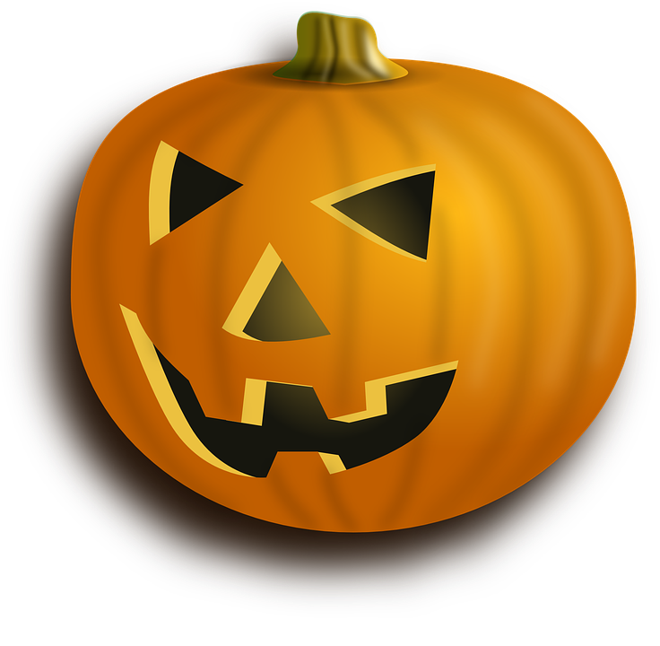
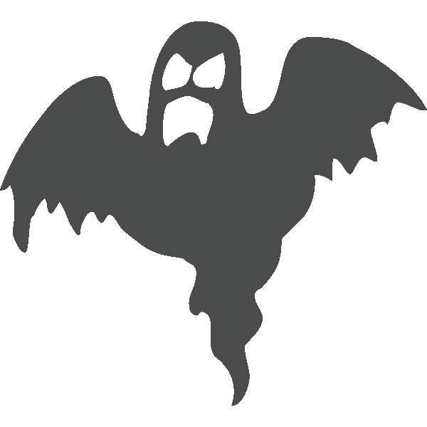
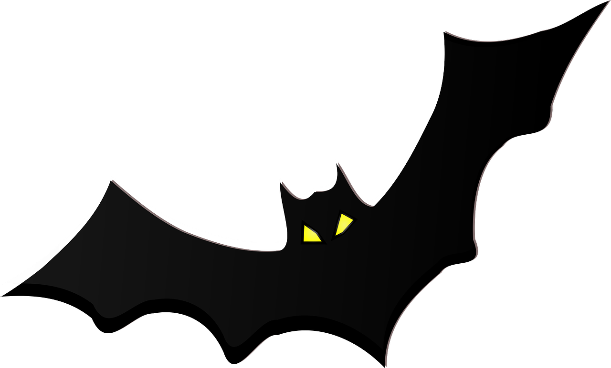
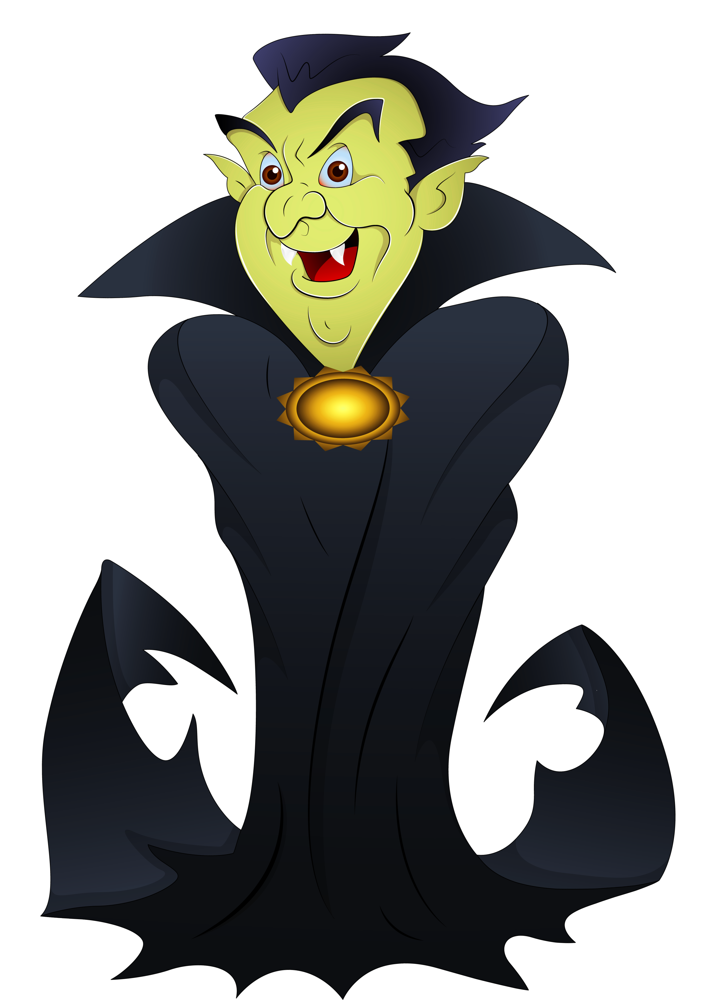

HALLOWEEN
Halloween – zwyczaj związany z maskaradą, obchodzony w wielu krajach w wieczór 31 października. Odniesienia do Halloween są często widoczne w kulturze popularnej, głównie amerykańskiej.
Halloween najhuczniej jest obchodzony w Stanach Zjednoczonych, Kanadzie, Irlandii, Australii i Wielkiej Brytanii. Mimo że dzień nie jest świętem urzędowym, cieszy się po święcie Bożego Narodzenia największą popularnością. Święto Halloween w Polsce pojawiło się w latach 90. XX w.
Symbole:




definicja ze strony wikipedia
Powrót